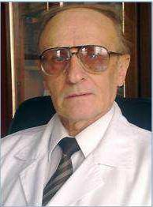

Никула Тарас Денисович
Головний редактор щорічного збірника наукових праць Національного медичного університету імені О.О. Богомольця.

Никула Тарас Денисович (1936 р.н.) — доктор медичних наук, професор, заслужений діяч науки і техніки України, лауреат Державної премії України в галузі науки і техніки, академік Академії наук вищої освіти України, дійсний член Української академій наук.
Закінчив з відзнакою у 1960 р. лікувальний факультет Чернівецького державного медичного інституту. У 1984 р. став доктором медичних наук, у 1988 р. — професором. З 1988 р. досі — завідувач кафедри пропедевтики внутрішньої медицини №2 Національного медичного університету імені О.О. Богомольця. У 1988–1997 р. виконував також обов'язки проректора НМУ з навчальної, наукової роботи чи їх заступника.
Автор 839 опублікованих наукових праць, зокрема 52 винаходів і корисних моделей, 65 навчальних посібників і монографій. Підготував 4 докторів, 19 кандидатів медичних наук і 7 магістрів медицини. Зараз готує доктора і двох кандидатів медичних наук. Коло наукових інтересів — нефрологія, кардіологія, гастроентерологія, ревматологія та ін.
Засновник і відповідальний редактор щорічника НМУ «Актуальні проблеми нефрології», визнаного ВАК України, член редколегій шести наукових медичних журналів. Фундатор і багаторічний науковий керівник клініки Київського міського центру нефрології та діалізу.
Організатор бальнеологічного курорту Брусниця на Буковині, колишній головний терапевт Української республіканської ради з управління курортами профспілок, заступником голови Державної наукової санаторно-курортної комісії з нефрології. Член спеціалізованої вченої ради з внутрішніх хвороб НМУ, член Вченої ради медичного факультету №4.
Нагороджений чотирма Почесними грамотами МОЗ України, медалями Ярослава Мудрого і «20 років Академії наук вищої освіти України» (АН ВО України), М.Д. Стражеска (НАМН України), Платона (АН України), «Знаком пошани» (Голови Київради) тощо, обраний членом президії правління товариства терапевтів України, членом правління Української асоціації нефрологів України. Почесний академік Української медичної стоматологічної академії (1995).
Дійсний член Нью-Йоркської академії наук (2002), Європейських асоціацій — ренальної, діалізу і трансплантації (1995), член Дослідницької академії (2011) Міжнародного біографічного центру (Кембридж, Англія), консультативний редактор Американського біографічного інституту (США). Удостоєний премії Академії наук вищої освіти України (2004), премії Української академії наук (2006), десятків міжнародних орденів і медалей: «Лідери для нового століття» (Інститут «Хто є хто», США), ордена «Excellentia», медалей «2000 видатних людей XX століття», «2000 видатних інтелектуалів XXI століття» і «2000 видатних учених XXI століття» (Міжнародний біографічний центр, Кембридж, Англія, 2000–2011). Номінований почесними міжнародними званнями «Людина року» (США — 2003, Англія — 2010), «Міжнародний вчений року» (2004, 2011). Внесений до книг «Імена України», «Хто є хто в Україні», «Буковина. Імена славних сучасників», «Кияни. Біографічний словник».